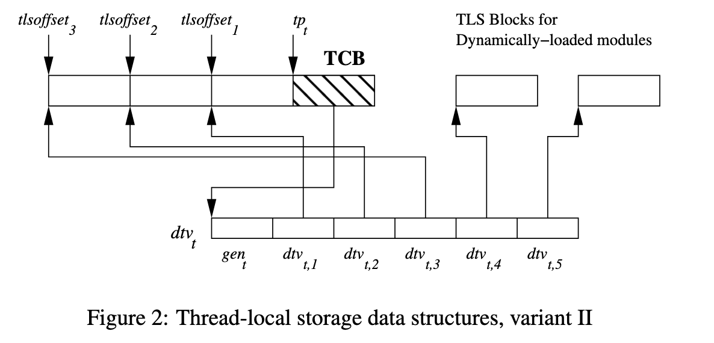

Thread Local Storage (TLS) 实现探究¶
背景¶
TLS 是 thread local storage 的缩写，可以很方便地存储一些 per-thread 的数据，但它内部是怎么实现的呢？本文对 glibc 2.31 版本的 TLS 实现进行探究。
__thread¶
首先来看 TLS 在 C 中是怎么使用的：用 __thread 标记一个全局变量（注：进入 C11/C++11 标准的用法是用 thread_local 来标记），那么它就会保存在 TLS 当中，每个线程都有一份：
那么编译器在生成访问这个 TLS 全局变量时，生成的指令也不同。以下面的代码为例：
int global_data;
__thread int tls_data;
void global(int val) { global_data = val; }
void tls(int val) { tls_data = val; }
生成的 amd64 汇编如下：
.text
global:
movl %edi, global_data(%rip)
ret
tls:
movl %edi, %fs:tls_data@tpoff
ret
.section .tbss,"awT",@nobits
tls_data:
.zero 4
.bss
global_data:
.zero 4
访问全局变量的时候，采用的是典型的 PC-relative 方式来找到全局变量 global_data 的地址；访问 thread local 变量的时候，可以看到它采用了一个比较少见的写法：%fs:tls_data@tpoff，它的意思是由链接器计算出 tls_data 相对 %fs 段寄存器的偏移，然后直接写到指令的偏移里。链接以上程序，可以看到最终的二进制是：
0000000000001140 <global>:
1140: 89 3d ce 2e 00 00 mov %edi,0x2ece(%rip) # 4014 <global_data>
1146: c3 ret
1147: 66 0f 1f 84 00 00 00 nopw 0x0(%rax,%rax,1)
114e: 00 00
0000000000001150 <tls>:
1150: 64 89 3c 25 fc ff ff mov %edi,%fs:0xfffffffffffffffc
1157: ff
1158: c3 ret
可见最终 global_data 被放到了相对二进制开头 0x4014 的地方，而 tls_data 被放到了 %fs:-0x4 的位置。那么这个 %fs 是怎么得到的，-0x4 的偏移又是怎么计算的呢？下面来进一步研究背后的实现。
TLS 的组织方式¶
首先 TLS 是 per-thread 的存储，意味着每个新线程，都有一个 buffer 需要保存 TLS 的数据。那么这个数据所在的位置，也需要一些 per-thread 的高效方式来访问，在 amd64 上，它是通过 %fs 段寄存器来维护的。那么 TLS 可能有哪些来源呢？首先可执行程序自己可能会用一些，它通过 DT_NEEDED 由动态链接器在启动时加载的动态库也有一些（比如 glibc 的 tcache），此外运行时 dlopen 了一些动态库也会有 TLS 的需求。为了满足这些需求，需要设计一个 TLS 的结构，既能满足这些在启动时已知的可执行程序和动态库的需求，又能满足运行时动态加载的新动态库的需求。
这里面可执行程序和启动时加载的动态库的需求是明确的，不会变的，因此可以由动态链接器在加载的时候，直接给可执行程序和动态库分配 TLS 空间：
- 比如可执行程序本身需要 0x10 字节的 TLS 空间，它启动时加载两个动态库 libc.so.6 和 libstdc++.so.6，期中 libc.so.6 需要 0x20 字节的 TLS 空间，libstdc++.so.6 需要 0x30 字节的 TLS 空间
- 加起来一共需要 0x60 字节的 TLS 空间，那么在创建线程的时候，创建好 0x60 字节的 TLS 空间，按照顺序进行分配：
- 0x00-0x10: 属于可执行程序
- 0x10-0x30: 属于 libc.so.6
- 0x30-0x60: 属于 libstdc++.so.6
- 分配好这个空间以后，因为 libc.so.6 无法提前预知它会被分配到哪个位置，所以需要一次重定位，把 libc.so.6 里的 TLS 空间的使用重定位到分配后的位置，例如 libc.so.6 的 0x20 的 TLS 空间内的开头 8 字节，现在在整个 TLS 空间内的偏移就是
0x20 + 8 = 0x28
但是 dlopen 动态加载进来的动态库怎么办呢？这些动态库的数量可以动态变化，可以加载也可以卸载，再这么线性分配就不合适了，这时候就需要给每个 dlopen 得到的动态库分配独立的 TLS 空间。既然是动态分配的空间，那么这些独立的 TLS 空间的地址，不同线程不同，不能通过一个基地址加固定偏移的方式来计算，就需要提供一个机制来找到各个动态库的 TLS 空间的地址。
glibc 的实现中，它把各个动态库的 TLS 空间的起始地址记录在一个 dtv 数组中，并且提供一个 __tls_get_addr 函数来查询动态库的 TLS 空间内指定 offset 的实际地址：
typedef struct dl_tls_index
{
uint64_t ti_module;
uint64_t ti_offset;
} tls_index;
void *
__tls_get_addr (tls_index *ti)
{
dtv_t *dtv = THREAD_DTV ();
/* omitted */
void *p = dtv[ti->ti_module].pointer.val;
/* omitted */
return (char *) p + ti->ti_offset;
}
其中 dtv 数组的指针保存在 struct pthread（即 Thread Control Block (TCB)）中，而这个 struct pthread 就保存在 %fs 段寄存器指向的地址上：
struct pthread
{
tcbhead_t header;
/* omitted */
};
typedef struct
{
/* omitted */
dtv_t *dtv;
/* omitted */
uintptr_t stack_guard;
/* omitted */
} tcbhead_t;
# define THREAD_DTV() \
({ struct pthread *__pd; \
THREAD_GETMEM (__pd, header.dtv); })
P.S. stack protector 所使用的 canary 的值就保存在 pthread.header.stack_guard 字段中，也就是在 %fs:40 位置。
而之前提到的可执行程序本身的 TLS 空间以及程序启动时加载的动态库的 TLS 空间，实际上是保存在 struct thread 也就是 TCB 前面的部分，从高地址往低地址分配（图片来源：ELF Handling For Thread-Local Storage）：

图中 \(tp_t\) 在 amd64 下就是 %fs 段寄存器，它直接指向的就是 struct thread 也就是 TCB；从 %fs 开始往低地址，先分配可执行程序本身的 TLS 空间（图中 \(tlsoffset_1\) 到 \(tp_t\) 的范围），后分配程序启动时加载的动态库的 TLS 空间（图中 \(tlsoffset_1\) 到 \(tlsoffset_2\) 以及 \(tlsoffset_3\) 到 \(tlsoffset_2\) 的范围）。注意这些偏移对于每个线程都是相同的，只是不同线程的 %fs 寄存器不同。
而对于 dlopen 动态加载的动态库，则 TLS 空间需要动态分配，然后通过 dtv 数组来索引（图中 \(dtv_{t,4}\) 和 \(dtv_{t,5}\)），因此无法通过重定位修正，而是要在运行时通过 __tls_get_addr 函数获取地址。为了让 __tls_get_addr 更具有通用性，dtv 数组也记录了分配在 %fs 指向的 TCB 更低地址的可执行程序和程序启动时加载的动态库的 TLS 空间，此时 __tls_get_addr 可以查到所有 TLS 变量的地址。每个动态库在 dtv 数组中都记录了信息，那么这个动态库在 dtv 数组中的下标，记为这个动态库的编号（module id），后面会多次出现这个概念。
知道了 TLS 的组织方式后，接下来观察编译器、链接器和动态链接器是如何配合着让代码可以找到正确的 TLS 变量的地址。
可执行程序¶
首先来看一个简单的场景：可执行程序直接访问自己定义的 TLS 变量。前面提到，可执行程序的 TLS 空间直接保存到 %fs 往下的地址，因此可执行程序的 TLS 变量相对 %fs 的偏移，是可以提前计算得到的。下面看一个例子：
__thread int tls_data1;
__thread int tls_data2;
int read_tls_data1() { return tls_data1; }
int read_tls_data2() { return tls_data2; }
int main() {}
编译得到的汇编：
read_tls_data1:
movl %fs:tls_data1@tpoff, %eax
ret
read_tls_data2:
movl %fs:tls_data2@tpoff, %eax
ret
这就是在本文一开头就看到的语法：%fs:symbol@tpoff，它会对应一个 R_X86_64_TPOFF32 类型的重定位，告诉链接器，这是一个 TLS 变量，并且它的偏移在静态链接的时候就可以计算出来，并且这个偏移会直接写到 mov 指令的立即数内：
$ gcc -O2 -c tls.c -o tls.o
$ objdump -S -r tls.o
# omitted
0000000000000000 <read_tls_data1>:
0: 64 8b 04 25 00 00 00 mov %fs:0x0,%eax
7: 00
4: R_X86_64_TPOFF32 tls_data1
8: c3 ret
9: 0f 1f 80 00 00 00 00 nopl 0x0(%rax)
0000000000000010 <read_tls_data2>:
10: 64 8b 04 25 00 00 00 mov %fs:0x0,%eax
17: 00
14: R_X86_64_TPOFF32 tls_data2
18: c3 ret
$ gcc tls.o -o tls
$ objdump -S tls
# omitted
0000000000001140 <read_tls_data1>:
1140: 64 8b 04 25 fc ff ff mov %fs:0xfffffffffffffffc,%eax
1147: ff
1148: c3 ret
1149: 0f 1f 80 00 00 00 00 nopl 0x0(%rax)
0000000000001150 <read_tls_data2>:
1150: 64 8b 04 25 f8 ff ff mov %fs:0xfffffffffffffff8,%eax
1157: ff
1158: c3 ret
$ objdump -t tls
# omitted
0000000000000000 g .tbss 0000000000000004 tls_data2
0000000000000004 g .tbss 0000000000000004 tls_data1
根据以上输出可以看到，可执行程序自己使用了 8 字节的 TLS 空间，其中低 4 字节对应 tls_data2，高 4 字节对应 tls_data1；根据这个信息，链接器就可以推断出 tls_data2 保存在 %fs-0x8 的位置，tls_data1 保存在 %fs-0x4 的位置，直接把这个偏移编码到 mov 指令内。这样，运行时开销是最小的。
这一种访问 TLS 的情况，也叫做 local exec TLS model：它只用于可执行程序访问可执行程序自己的 TLS 变量的场景。可执行程序的 TLS 空间总是紧贴着 %fs 分配，不会受到动态库的影响，因此可以提前计算出它自己的 TLS 变量的偏移。
动态库¶
接下来观察另一种情况：动态库使用动态库自己的 TLS 变量。按照前面的分析，有两种情况：
- 第一种情况是，动态库是在程序启动时被动态链接器加载，那么它会被分配在
%fs往低地址的空间。虽然相对%fs的偏移无法在链接阶段就提前得知，但是动态链接器会给它分配连续的 TLS 空间，从而可以计算出它的 TLS 空间相对%fs的偏移，于是动态链接器可以帮助完成剩下的重定位。 - 第二种情况是，动态库是由 dlopen 被加载，那么它被分配的 TLS 空间的地址就无法从
%fs直接计算得出，此时就需要借助__tls_get_addr函数的帮助。
initial exec TLS model¶
首先来看第一种情况，它也被叫做 initial exec TLS model。还是从例子开始看起：
__thread int tls_data1;
__thread int tls_data2;
int read_tls_data1() { return tls_data1; }
int read_tls_data2() { return tls_data2; }
首先观察编译出来的汇编：
$ gcc -ftls-model=initial-exec -fPIC -O2 -S tls.c
$ cat tls.s
read_tls_data1:
movq tls_data1@gottpoff(%rip), %rax
movl %fs:(%rax), %eax
ret
read_tls_data2:
movq tls_data2@gottpoff(%rip), %rax
movl %fs:(%rax), %eax
ret
可以看到，这次生成的汇编不同了：它首先从 symbol@gottpoff(%rip) 读取一个 offset 到 %rax 寄存器，再从 %fs:(%rax) 地址读取 TLS 变量的值。上面提到，在 initial exec TLS model 下，TLS 空间是可以相对 %fs 寻址的，但是 offset 无法提前得知，需要由动态链接器完成重定位。
回忆之前在《开发一个链接器（4）》一文中，当动态库想要获得某个只有动态链接器才知道的地址，就会把它预留好位置放到 .got 表当中，并且输出一个 dynamic relocation，告诉动态链接器如何把地址计算出来并填进去。在这里，原理也是类似的，只不过是在 .got 表中预留了一个空间来保存 TLS 变量相对 %fs 的偏移。下面观察对象文件内是怎么记录这个信息的：
$ as tls.s -o tls.o
$ objdump -S -r tls.o
# omitted
0000000000000000 <read_tls_data1>:
0: 48 8b 05 00 00 00 00 mov 0x0(%rip),%rax # 7 <read_tls_data1+0x7>
3: R_X86_64_GOTTPOFF tls_data1-0x4
7: 64 8b 00 mov %fs:(%rax),%eax
a: c3 ret
b: 0f 1f 44 00 00 nopl 0x0(%rax,%rax,1)
0000000000000010 <read_tls_data2>:
10: 48 8b 05 00 00 00 00 mov 0x0(%rip),%rax # 17 <read_tls_data2+0x7>
13: R_X86_64_GOTTPOFF tls_data2-0x4
17: 64 8b 00 mov %fs:(%rax),%eax
1a: c3 ret
可以看到，这时候它在 mov 指令的立即数位置创建了一个 R_X86_64_GOTTPOFF 类型的重定位，这是告诉链接器：创建一个 .got entry，里面由动态链接器填写对应 symbol 在运行时相对 %fs 的偏移，然后链接器把 .got entry 相对 mov 指令的偏移写到 mov 指令的立即数内。
至于为啥是 symbol-0x4 而不是 symbol，原因在之前《开发一个链接器（2）》 已经出现过：x86 指令的立即数偏移是基于指令结尾的，而 relocation 指向的是立即数的起始地址，也就是指令结尾地址减去 4，那么立即数也要做相应的修正。
最后，观察链接器做的事情：
$ gcc -shared tls.o -o libtls.so
$ objdump -D -S -R libtls.so
# omitted
Disassembly of section .text:
0000000000001100 <read_tls_data1>:
1100: 48 8b 05 d1 2e 00 00 mov 0x2ed1(%rip),%rax # 3fd8 <tls_data1+0x3fd4>
1107: 64 8b 00 mov %fs:(%rax),%eax
110a: c3 ret
110b: 0f 1f 44 00 00 nopl 0x0(%rax,%rax,1)
0000000000001110 <read_tls_data2>:
1110: 48 8b 05 a9 2e 00 00 mov 0x2ea9(%rip),%rax # 3fc0 <tls_data2+0x3fc0>
1117: 64 8b 00 mov %fs:(%rax),%eax
111a: c3 ret
Disassembly of section .got:
0000000000003fb8 <.got>:
...
3fc0: R_X86_64_TPOFF64 tls_data2
3fd8: R_X86_64_TPOFF64 tls_data1
可以看到：
- 链接器为两个 TLS 变量分别创建了一个
.gotentry，tls_data1对应0x3fd8，tls_data2对应0x3fc0 - 链接器在这两个
.gotentry 处创建了 dynamic relocationR_X86_64_TPOFF64，告诉动态链接器：给动态库分配空间后，把tls_data1和tls_data2相对%fs的偏移写入到这两个.gotentry 内 -
链接器计算出了
mov指令和.gotentry 的相对偏移，直接写到了mov指令的立即数当中：4. 那么在运行时，为了读取 TLS 变量，首先从0000000000001100 <read_tls_data1>: 1100: 48 8b 05 d1 2e 00 00 mov 0x2ed1(%rip),%rax # 3fd8 <tls_data1+0x3fd4> 1107: 64 8b 00 mov %fs:(%rax),%eax 110a: c3 ret 110b: 0f 1f 44 00 00 nopl 0x0(%rax,%rax,1) 0000000000001110 <read_tls_data2>: 1110: 48 8b 05 a9 2e 00 00 mov 0x2ea9(%rip),%rax # 3fc0 <tls_data2+0x3fc0> 1117: 64 8b 00 mov %fs:(%rax),%eax 111a: c3 ret.got表读取 TLS 变量相对%fs的偏移写到%rax寄存器，再通过%fs:(%rax)访问 TLS 变量即可
那么这就是 initial exec TLS model 的实现方法了：它利用了动态库会在程序启动时加载的性质，保证 TLS 变量都保存在相对 %fs 的运行时可知且不变的偏移上，把偏移记录在 .got 表中，由动态链接器去计算，那么访问的时候就很简单了，直接读取 offset 从 %fs 访问即可。
local/global dynamic TLS model¶
接下来看动态库的第二种情况：它可能由 dlopen 加载，因此 TLS 变量相对 %fs 的位置可能会变化，此时需要通过 __tls_get_addr 函数来得到 TLS 变量的地址。回顾前面提到的 __tls_get_addr 的声明：
typedef struct dl_tls_index
{
uint64_t ti_module;
uint64_t ti_offset;
} tls_index;
void *__tls_get_addr (tls_index *ti);
即它需要两个信息，一个是 TLS 变量所在的动态库的编号（这个编号是动态生成的一个 id，实际上是这个动态库在 dtv 数组中的下标），另外是这个 TLS 变量在动态库内的偏移。这时候，又分为两种情况：
- 第一种情况是，这个 TLS 变量就在这个动态库本身内部定义，此时 TLS 变量在动态库内的偏移在链接期间已知，只是不知道 TLS 空间的起始地址，需要通过
__tls_get_addr函数获取，这种情景叫做 local dynamic TLS model - 第二种情况是，这个 TLS 变量不知道在哪个动态库定义，此时只知道这个 TLS 变量的名字，不知道它属于哪个动态库，也不知道它在动态库内的偏移，这种情况叫做 global dynamic TLS model，是最通用的情况，对 TLS 变量所在的位置没有任何假设
local dynamic TLS model¶
接下来分析 local dynamic TLS model，它面向的场景是一个可能被 dlopen 加载的动态库，需要访问自己的 TLS 变量，此时需要用 __tls_get_addr 读取自己的 TLS 空间的起始地址，根据链接时已知的偏移，计算出 TLS 变量在运行时的地址。由于 __tls_get_addr 需要知道动态库的编号，而这个编号只有动态链接器才知道，因此需要生成一个 dynamic relocation，让动态链接器把这个动态库自己的编号写入到 .got entry 中，之后才能拿这个 .got entry 的值调用 __tls_get_addr，进而得到 TLS 变量的地址。下面来观察这个过程，源码和之前一样：
__thread int tls_data1;
__thread int tls_data2;
int read_tls_data1() { return tls_data1; }
int read_tls_data2() { return tls_data2; }
首先查看生成的汇编：
$ gcc -ftls-model=local-dynamic -fPIC -O2 -S tls.c
$ cat tls.s
read_tls_data1:
.LFB0:
subq $8, %rsp
leaq tls_data1@tlsld(%rip), %rdi
call __tls_get_addr@PLT
movl tls_data1@dtpoff(%rax), %eax
addq $8, %rsp
ret
read_tls_data2:
subq $8, %rsp
leaq tls_data2@tlsld(%rip), %rdi
call __tls_get_addr@PLT
movl tls_data2@dtpoff(%rax), %eax
addq $8, %rsp
ret
首先可以看到的是一个新的语法：symbol@tlsld(%rip)，生成一个 R_X86_64_TLSLD 类型的 relocation，它的意思是在 .got 表中生成一个 entry，这个 entry 会保存当前动态库对应的编号，然后在这里通过 lea 指令把这个 .got entry 的地址作为 tls_index * 类型的参数传给 __tls_get_addr，那么它就会去寻找这个动态库的 TLS 空间的起始地址，把结果写入到 %rax 寄存器内。
得到 TLS 空间的起始地址后，再利用 symbol@dtpoff(%rax) 的语法，生成 R_X86_64_DTPOFF32 类型的 relocation，在链接的时候直接把 symbol 相对自己的 TLS 空间的起始地址的偏移写到 movl 指令内，从而实现了 TLS 变量的访问。
下面观察生成的对象文件：
$ as tls.s -o tls.o
$ objdump -D -r tls.o
Disassembly of section .text:
0000000000000000 <read_tls_data1>:
0: 48 83 ec 08 sub $0x8,%rsp
4: 48 8d 3d 00 00 00 00 lea 0x0(%rip),%rdi # b <read_tls_data1+0xb>
7: R_X86_64_TLSLD tls_data1-0x4
b: e8 00 00 00 00 call 10 <read_tls_data1+0x10>
c: R_X86_64_PLT32 __tls_get_addr-0x4
10: 8b 80 00 00 00 00 mov 0x0(%rax),%eax
12: R_X86_64_DTPOFF32 tls_data1
16: 48 83 c4 08 add $0x8,%rsp
1a: c3 ret
1b: 0f 1f 44 00 00 nopl 0x0(%rax,%rax,1)
0000000000000020 <read_tls_data2>:
20: 48 83 ec 08 sub $0x8,%rsp
24: 48 8d 3d 00 00 00 00 lea 0x0(%rip),%rdi # 2b <read_tls_data2+0xb>
27: R_X86_64_TLSLD tls_data2-0x4
2b: e8 00 00 00 00 call 30 <read_tls_data2+0x10>
2c: R_X86_64_PLT32 __tls_get_addr-0x4
30: 8b 80 00 00 00 00 mov 0x0(%rax),%eax
32: R_X86_64_DTPOFF32 tls_data2
36: 48 83 c4 08 add $0x8,%rsp
3a: c3 ret
可以看到，由于 __tls_get_addr 的运行时地址也是不知道的，所以就和调用其他动态库的函数一样，用已有的 PLT 机制去重定位。
接下来看最后的动态库：
$ gcc -shared tls.o -o libtls.so
$ objdump -D -R libtls.so
# omitted
Disassembly of section .text:
0000000000001110 <read_tls_data1>:
1110: 48 83 ec 08 sub $0x8,%rsp
1114: 48 8d 3d 9d 2e 00 00 lea 0x2e9d(%rip),%rdi # 3fb8 <_DYNAMIC+0x1c0>
111b: e8 10 ff ff ff call 1030 <__tls_get_addr@plt>
1120: 8b 80 04 00 00 00 mov 0x4(%rax),%eax
1126: 48 83 c4 08 add $0x8,%rsp
112a: c3 ret
112b: 0f 1f 44 00 00 nopl 0x0(%rax,%rax,1)
0000000000001130 <read_tls_data2>:
1130: 48 83 ec 08 sub $0x8,%rsp
1134: 48 8d 3d 7d 2e 00 00 lea 0x2e7d(%rip),%rdi # 3fb8 <_DYNAMIC+0x1c0>
113b: e8 f0 fe ff ff call 1030 <__tls_get_addr@plt>
1140: 8b 80 00 00 00 00 mov 0x0(%rax),%eax
1146: 48 83 c4 08 add $0x8,%rsp
114a: c3 ret
Disassembly of section .got:
0000000000003fb8 <.got>:
...
3fb8: R_X86_64_DTPMOD64 *ABS*
可以看到，无论是访问 tls_data1 还是 tls_data2，在调用 __tls_get_addr 时，使用的参数都是一样的 0x3fb8，也就是动态链接器把当前动态库的编号写进去的 .got entry。返回值就是当前动态库的 TLS 空间的基地址，把返回值加上对应的 offset（tls_data1 的偏移是 4，tls_data2 的偏移是 0，这个 offset 直接写到了 movl 指令的立即数里），就得到了 TLS 变量的地址。
特别地，如果在一个函数里访问多个当前动态库的 TLS 变量，那么 __tls_get_addr 调用是可以合并的：
__thread int tls_data1;
__thread int tls_data2;
int read_tls_data() { return tls_data1 + tls_data2; }
会生成如下的汇编：
$ gcc -ftls-model=local-dynamic -fPIC -O2 -S tls.c
$ cat tls.s
read_tls_data:
.LFB0:
subq $8, %rsp
leaq tls_data1@tlsld(%rip), %rdi
call __tls_get_addr@PLT
movl tls_data1@dtpoff(%rax), %edx
addl tls_data2@dtpoff(%rax), %edx
addq $8, %rsp
movl %edx, %eax
ret
这样就减少了一次 __tls_get_addr 的调用。
global dynamic TLS model¶
再来介绍最后一种情况：对于一个 dlopen 的动态库，如果它要访问的 TLS 变量，只知道名字，不知道来自哪一个动态库，不知道偏移是多少。这时候，只能把全部工作交给动态链接器去做：让动态链接器根据符号，去查找符号表，找到对应的动态库和偏移，记录下来；由于涉及到动态库的编号和偏移，所以需要两个连续的 .got entry，正好对应 tls_index 结构体的两项成员：
继续上面的例子，这次采用 global dynamic TLS model 进行编译：
$ cat tls.c
__thread int tls_data1;
__thread int tls_data2;
int read_tls_data1() { return tls_data1; }
int read_tls_data2() { return tls_data2; }
$ gcc -ftls-model=global-dynamic -fPIC -O2 -S tls.c
$ cat tls.s
read_tls_data1:
subq $8, %rsp
data16 leaq tls_data1@tlsgd(%rip), %rdi
.value 0x6666
rex64
call __tls_get_addr@PLT
movl (%rax), %eax
addq $8, %rsp
ret
read_tls_data2:
subq $8, %rsp
data16 leaq tls_data2@tlsgd(%rip), %rdi
.value 0x6666
rex64
call __tls_get_addr@PLT
movl (%rax), %eax
addq $8, %rsp
ret
这次出现了一些不一样的内容：data16、.value 0x6666 和 rex64；实际上，这些是无用的指令前缀，不影响指令的语义，但是保证了这段代码有足够的长度，方便后续链接器进行优化。除了这些奇怪的前缀，核心就是 symbol@tlsgd(%rip) 语法，它会创建 R_X86_64_TLSGD relocation，它的意思是：创建一对 .got entry，第一个 entry 对应 symbol 所在动态库的编号，第二个 entry 对应 symbol 在动态库的 TLS 空间内的偏移，这两个 entry 组成一个 tls_index 结构体；通过 leaq 指令得到这个结构体的指针，调用 __tls_get_addr，就得到了这个 TLS 变量的地址。
接下来看生成的对象文件：
$ as tls.s -o tls.o
$ objdump -D -r tls.o
Disassembly of section .text:
0000000000000000 <read_tls_data1>:
0: 48 83 ec 08 sub $0x8,%rsp
4: 66 48 8d 3d 00 00 00 data16 lea 0x0(%rip),%rdi # c <read_tls_data1+0xc>
b: 00
8: R_X86_64_TLSGD tls_data1-0x4
c: 66 66 48 e8 00 00 00 data16 data16 rex.W call 14 <read_tls_data1+0x14>
13: 00
10: R_X86_64_PLT32 __tls_get_addr-0x4
14: 8b 00 mov (%rax),%eax
16: 48 83 c4 08 add $0x8,%rsp
1a: c3 ret
1b: 0f 1f 44 00 00 nopl 0x0(%rax,%rax,1)
0000000000000020 <read_tls_data2>:
20: 48 83 ec 08 sub $0x8,%rsp
24: 66 48 8d 3d 00 00 00 data16 lea 0x0(%rip),%rdi # 2c <read_tls_data2+0xc>
2b: 00
28: R_X86_64_TLSGD tls_data2-0x4
2c: 66 66 48 e8 00 00 00 data16 data16 rex.W call 34 <read_tls_data2+0x14>
33: 00
30: R_X86_64_PLT32 __tls_get_addr-0x4
34: 8b 00 mov (%rax),%eax
36: 48 83 c4 08 add $0x8,%rsp
3a: c3 ret
基本符合预期，通过 R_X86_64_TLSGD relocation 来表示意图，通过反汇编也可以看到，多余的那些修饰符是没有用的，语义上就是一条 leaq 加一条 call 指令。和之前 local dynamic TLS model 类似，__tls_get_addr 也是用已有的 PLT 机制来寻址。
最后来看生成的动态库：
$ gcc -shared tls.o -o libtls.so
$ objdump -D -R libtls.so
# omitted
Disassembly of section .text:
0000000000001110 <read_tls_data1>:
1110: 48 83 ec 08 sub $0x8,%rsp
1114: 66 48 8d 3d b4 2e 00 data16 lea 0x2eb4(%rip),%rdi # 3fd0 <tls_data1@@Base+0x3fcc>
111b: 00
111c: 66 66 48 e8 0c ff ff data16 data16 rex.W call 1030 <__tls_get_addr@plt>
1123: ff
1124: 8b 00 mov (%rax),%eax
1126: 48 83 c4 08 add $0x8,%rsp
112a: c3 ret
112b: 0f 1f 44 00 00 nopl 0x0(%rax,%rax,1)
0000000000001130 <read_tls_data2>:
1130: 48 83 ec 08 sub $0x8,%rsp
1134: 66 48 8d 3d 74 2e 00 data16 lea 0x2e74(%rip),%rdi # 3fb0 <tls_data2@@Base+0x3fb0>
113b: 00
113c: 66 66 48 e8 ec fe ff data16 data16 rex.W call 1030 <__tls_get_addr@plt>
1143: ff
1144: 8b 00 mov (%rax),%eax
1146: 48 83 c4 08 add $0x8,%rsp
114a: c3 ret
Disassembly of section .got:
0000000000003fa8 <.got>:
...
3fb0: R_X86_64_DTPMOD64 tls_data2@@Base
3fb8: R_X86_64_DTPOFF64 tls_data2@@Base
3fd0: R_X86_64_DTPMOD64 tls_data1@@Base
3fd8: R_X86_64_DTPOFF64 tls_data1@@Base
观察 .got，可以看到对于每个 TLS 变量，都生成了两个 entry：tls_data2 占用了 0x3fb0 和 0x3fb8 两个 entry，第一个对应动态库的下标（MOD 表示 Module），第二个对应偏移（OFF 表示 Offset）；tls_data1 也是类似的，占用了 0x3fd0 和 0x3fd8。当动态链接器在 .got 表中准备好 tls_index 结构体后，在访问 TLS 变量时，只需要 lea + call 就可以找到 TLS 变量的地址了。
四种 TLS model 的对比¶
接下来进行四种 TLS model 的对比：
- local exec TLS model: 用于可执行程序访问自身的 TLS 变量，由于可执行程序的 TLS 空间总是紧挨着
%fs，所以自身的 TLS 变量相对%fs的偏移在链接时已知，可以直接计算出来，运行时开销最小 - initial exec TLS model: 用于在程序启动时由动态链接器自动加载的动态库访问自身的 TLS 变量，由于它的 TLS 空间相对
%fs的偏移在加载后就是固定的，所以由动态链接器计算出各个 TLS 变量相对%fs的偏移，写到.got表中，运行时只需要读取.got表中记录的 offset，和%fs做加法就得到了变量的地址 - local dynamic TLS model: 用于可能被 dlopen 的动态库访问自身的 TLS 变量，由于它的 TLS 空间相对
%fs的偏移是不确定的，所以需要用__tls_get_addr调用来获取自身的 TLS 空间的起始地址；为了给__tls_get_addr传递正确的参数，告诉这个函数自己的动态库编号是多少，在.got表中预留了一个 entry 让动态链接器把该动态库的编号写进去；那么运行时只需要读取.got表中记录的动态库编号，调用__tls_get_addr，再和链接时已知的 offset 做加法就得到了变量的地址 - global dynamic TLS model: 用于通用情况下，不知道 TLS 变量属于哪个动态库，也不知道 TLS 变量在 TLS 空间内的偏移是多少，所以需要动态链接器去查询 TLS 变量属于哪个动态库，放在哪个偏移上，并且动态链接器要把这两个信息写到
.got表中；那么运行时就要用__tls_get_addr调用来根据.got表中记录的动态库编号以及偏移来找到变量的地址
下面是一个对比表格：
| Instructions | GOT | |
|---|---|---|
| local exec | movq | N/A |
| initial exec | movq + addq | offset |
| local dynamic | leaq + call + leaq | self module index |
| global dynamic | leaq + call | module index + offset |
特别地，local dynamic TLS model 的 leaq + call 是可以复用的，所以整体来说，还是越通用的 TLS model，运行时的开销越大。
实际编程中的 TLS model¶
看到这里，你可能会疑惑：在编程的时候，大多数时候并没有去管 TLS model 的事情，也就是说在编译的时候并没有指定，那么这个时候会采用什么 TLS model 呢？
答案是取决于编译器和链接器会根据所能了解到的情况，选择一个最优的实现方法。在前面的例子中，都是直接定义了一个全局的 __thread 变量然后去访问它，但如果它是 static 的，会发生什么呢？如果编译的时候，没有开 -fPIC，也就是说生成的代码不会出现在动态库中，又会发生什么呢？
首先来看从编译器到汇编的这一个阶段，会采用什么样的 TLS model：
- 如果在编译源码的时候，没有开
-fPIC，那么生成的代码只出现在可执行程序中，这个时候编译器会直接使用 local exec TLS model，即生成movl %fs:symbol@tpoff, %rax的指令 - 如果在编译源码的时候，开了
-fPIC，那么生成的代码既可能出现在可执行程序中，也可能出现在动态库中，这时会首先默认为 global dynamic TLS model，即生成data16 leaq symbol@tlsgd(%rip), %rdi; .value 0x6666; rex64; call __tls_get_addr@PLT; movl (%rax), %eax指令 - 但如果
__thread变量设置了static，即使打开了-fPIC，也保证了这个 TLS 变量一定是访问自己 TLS 空间中的，不会访问别人的，那么编译器会自动选择 local dynamic TLS model，即生成leaq symbol@tlsld(%rip), %rdi; call__tls_get_addr@PLT; movl %symbol@dtpoff(%rax), %eax指令
接下来观察链接的时候，会发生什么事情：
-
如果编译源码的时候，打开了
-fPIC且没有用static，如前所述，编译器会使用 global dynamic TLS model；但如果这个对象文件最后被链接到了可执行程序当中，那么链接器知道这个时候用 local exec TLS model 是性能更好的，那么它会对指令进行改写，此时之前预留的无用的指令前缀data 16; .value 0x6666; rex64起了作用，保证改写前后的指令序列的长度不变： -
类似地，如果编译源码的时候，打开了
-fPIC且用了static，如前所述，编译器会使用 local dynamic TLS model；但如果这个对象文件最后被链接到了可执行程序当中，那么链接器知道这个时候用 local exec TLS model 是性能更好的，那么它会对指令进行改写，为了保证改写前后的指令序列的长度不变，这次是在生成的汇编里加入无用的指令前缀：# before linker optimizations: local dynamic leaq symbol@tlsld(%rip), %rdi call __tls_get_addr@PLT movl symbol@dtpoff(%rax), %eax # after linker optimizations: local exec # the symbol@tpoff(%rax) relocation is resolved by the linker immediately .word 0x6666 .byte 0x66 movq %fs:0, %rax movl symbol@tpoff(%rax), %eax -
如果编译源码的时候，打开了
-fPIC且用了extern来标记 TLS 变量，由于编译器不知道这个 TLS 变量属于谁，所以编译器会使用 global dynamic TLS model；但如果这个对象文件最后被链接到了可执行程序当中，并且编译器发现这个 TLS 变量属于一个动态库，这意味着这个 TLS 变量在程序启动时会随着动态库加载而变得可用，适用 initial exec TLS model，于是链接器也会进行改写： -
如果编译源码的时候，没有打开
-fPIC且用了extern来标记 TLS 变量，那么编译器知道，这个对象文件最后只能出现在可执行程序中，那么这个 TLS 变量要么来自于可执行程序自己，要么来自于程序启动时加载的动态库，所以编译器会使用 initial exec TLS model；但如果这个对象文件最后被链接到了可执行程序当中，并且编译器发现这个 TLS 变量属于可执行程序自己，适用 local exec TLS model，于是链接器也会进行改写：
可见通过两阶段的处理，在编译器和链接器的协同下，尝试优化到一个开销更小的 TLS model，转化的几种情况如下：
- global dynamic -> initial exec：编译的时候开了 -fPIC 和
extern，然后链接到可执行程序内，TLS 变量来自动态库 - global dynamic -> local exec：编译的时候开了 -fPIC，然后链接到可执行程序内，TLS 变量来自程序自己
- local dynamic -> local exec：编译的时候开了 -fPIC 和
-static，然后链接到可执行程序内，TLS 变量来自程序自己 - initial exec -> local exec：编译的时候没开 -fPIC，然后链接到可执行程序内，TLS 变量来自程序自己
TLSDESC¶
前面提到，在 global dynamic 和 local dynamic 两种 TLS model 下，要访问 TLS 变量的时候，需要调用 __tls_get_addr 函数，这是比较慢的。为了优化它，让人想到了 PLT 机制：
- 初始情况下，PLT 会生成一个 stub，从
.got读取一个函数指针并跳转，这个函数指针初始情况下是执行了stub的下一条指令 - 对于第一次执行这个 stub，它会把这个函数的编号 push 到栈上，然后调用动态链接器提供的
_dl_runtime_resolve函数来寻找这个函数的实际地址；此时_dl_runtime_resolve会把找到的函数地址写回到.got的函数指针 - 此后再次执行 stub 的时候，就会从
.got读取计算好的的函数指针，直接跳转到实际的函数地址
由此可以类比得到一个针对 TLS 的类似机制，称为 TLSDESC：
- TLSDESC 占用 16 字节空间，前面 8 字节是一个函数指针，后面 8 字节用来保存 offset，保存在
.got表中 - 把原来 local/global dynamic TLS model 对
__tls_get_addr的调用，改成调用 TLSDESC 中的函数指针，调用时%rax寄存器指向了 TLSDESC 的地址，它的返回结果是 TLS 变量相对%fs的偏移，后续指令根据这个偏移计算出实际的地址 - 动态链接器在加载的时候，它会去判断目标 TLS 变量相对
%fs的偏移是否是常量：对于可执行程序以及随着程序启动而自动加载的动态库，它们的 TLS 变量相对%fs的偏移是常量 -
如果目标 TLS 变量相对
%fs的偏移是常量，则把这个常量写入到.got表中 TLSDESC 变量的 offset 的位置，然后把函数指针改写成_dl_tlsdesc_return，它是一个很简单的实现，因为在调用这个函数时，%rax寄存器指向了 TLSDESC 的地址，所以直接从%rax+8地址把 offset 读出来然后返回就可以： -
如果目标 TLS 变量相对
%fs的偏移不是常量，则把函数指针改写成_dl_tlsdesc_dynamic函数，再走和之前的__tls_get_addr类似的逻辑，完成剩下的查找；由于返回值是 TLS 变量相对%fs的偏移，所以返回之前还要减去%fs的地址：/* %rax points to the TLS descriptor, such that 0(%rax) points to _dl_tlsdesc_dynamic itself, and 8(%rax) points to a struct tlsdesc_dynamic_arg object. It must return in %rax the offset between the thread pointer and the object denoted by the argument, without clobbering any registers. The assembly code that follows is a rendition of the following C code, hand-optimized a little bit. ptrdiff_t _dl_tlsdesc_dynamic (register struct tlsdesc *tdp asm ("%rax")) { struct tlsdesc_dynamic_arg *td = tdp->arg; dtv_t *dtv = *(dtv_t **)((char *)__thread_pointer + DTV_OFFSET); if (__builtin_expect (td->gen_count <= dtv[0].counter && (dtv[td->tlsinfo.ti_module].pointer.val != TLS_DTV_UNALLOCATED), 1)) return dtv[td->tlsinfo.ti_module].pointer.val + td->tlsinfo.ti_offset - __thread_pointer; return __tls_get_addr_internal (&td->tlsinfo) - __thread_pointer; } */
它利用的也是在内存中保存函数指针，通过运行时替换函数指针的方式，实现 slow path 到 fast path 的动态替换。
dtv 维护¶
最后再来深入分析一下 dtv 的维护方式。前面提到，dtv 的指针是保存在 struct pthread 内的，而 struct pthread 又是保存在 %fs 寄存器指向的位置：
struct pthread
{
tcbhead_t header;
/* omitted */
};
typedef struct
{
/* omitted */
dtv_t *dtv;
/* omitted */
} tcbhead_t;
所以要访问 dtv 也很简单，直接从 %fs 加它在 struct pthread 结构体内的偏移即可。
前面提到，在调用 __tls_get_addr 时，需要提供一个动态库的 ID 来查询得到这个动态库的 TLS 空间的起始地址，再加上在这个 TLS 空间内的偏移。而这个动态库的 ID，正好就是 dtv 数组的下标，所以 __tls_get_addr 做的事情大概是：
- 找到
dtv的地址：mov %fs:DTV_OFFSET, %RDX_LP - 从
__tls_get_addr函数的参数里读取ti_module字段：mov TI_MODULE_OFFSET(%rdi), %RAX_LP -
读取
dtv[ti->ti_module].val，也就是这个模块的 TLS 空间的起始地址：salq $4, %rax; movq (%rdx, %rax), %rax，这里左移 4 位是因为dtv数组的每个元素的类型是dtv_t，其定义如下：4. 把起始地址加上偏移，然后返回：struct dtv_pointer { void *val; /* Pointer to data, or TLS_DTV_UNALLOCATED. */ void *to_free; /* Unaligned pointer, for deallocation. */ }; /* Type for the dtv. */ typedef union dtv { size_t counter; struct dtv_pointer pointer; } dtv_t;add TI_OFFSET_OFFSET(%rdi), %RAX_LP; ret
但实际情况会比这个更复杂：dlopen 可能会动态引入新的动态库，此时 dtv 数组可能需要扩张；此外，如果一个动态库有 TLS 变量但是从来不用，也可以 lazy 分配它的 TLS 空间，只有在第一次访问的时候，才去分配。
首先来考虑第一个需求，处理 dlopen 导致 dtv 元素个数变化，它的实现方法是这样的：
-
dtv[0]不用来保存 TLS 空间的信息，而是记录一个 counter，这个 counter 记录的是当前 dtv 的版本号（generation），另外在全局变量dl_tls_generation中记录当前最新的版本号；当 dlopen 导致 dtv 结构发生变化时，更新dl_tls_generation版本，然后在__tls_get_addr里检查版本号，不一致则进入 slow path：2. 在ENTRY (__tls_get_addr) mov %fs:DTV_OFFSET, %RDX_LP mov GL_TLS_GENERATION_OFFSET+_rtld_local(%rip), %RAX_LP /* GL(dl_tls_generation) == dtv[0].counter */ cmp %RAX_LP, (%rdx) jne 1f mov TI_MODULE_OFFSET(%rdi), %RAX_LP /* dtv[ti->ti_module] */ salq $4, %rax movq (%rdx,%rax), %rax /* omitted */ add TI_OFFSET_OFFSET(%rdi), %RAX_LP ret 1: /* slow path, stack alignment omitted */ call __tls_get_addr_slow ret__tls_get_addr_slow中，如果发现当前 dtv 的版本号和最新的版本号dl_tls_generation不一致，就调用update_get_addr来重新分配内存：
具体的 dtv 更新逻辑比较复杂，有兴趣的读者可以翻阅 glibc 的源码中 update_get_addr 函数的实现。
接下来考虑第二个需求，也就是 lazy 分配，只有在第一次访问 TLS 空间的时候，才给 dlopen 的动态库分配 TLS 空间。为了区分已分配和未分配的 TLS 空间，未分配的 TLS 空间的 val 字段的值是 TLS_DTV_UNALLOCATED，当 __tls_get_addr 检测到 TLS 空间尚未分配时，也会进入 slow path：
ENTRY (__tls_get_addr)
mov %fs:DTV_OFFSET, %RDX_LP
mov GL_TLS_GENERATION_OFFSET+_rtld_local(%rip), %RAX_LP
/* GL(dl_tls_generation) == dtv[0].counter */
cmp %RAX_LP, (%rdx)
jne 1f
mov TI_MODULE_OFFSET(%rdi), %RAX_LP
/* dtv[ti->ti_module] */
salq $4, %rax
movq (%rdx,%rax), %rax
/* branch if val == TLS_DTV_UNALLOCATED */
cmp $-1, %RAX_LP
je 1f
add TI_OFFSET_OFFSET(%rdi), %RAX_LP
ret
1:
/* slow path, stack alignment omitted */
call __tls_get_addr_slow
ret
在 slow path 中，最终由 allocate_dtv_entry 函数来分配这片空间，注意到 TLS 空间可能有对齐的要求，所以它实际上记录了两个地址，一个是 malloc 得到的地址（用于后续的 free 调用），一个是经过对齐后的地址：
/* Allocate one DTV entry. */
static struct dtv_pointer
allocate_dtv_entry (size_t alignment, size_t size)
{
if (powerof2 (alignment) && alignment <= _Alignof (max_align_t))
{
/* The alignment is supported by malloc. */
void *ptr = malloc (size);
return (struct dtv_pointer) { ptr, ptr };
}
/* Emulate memalign to by manually aligning a pointer returned by
malloc. First compute the size with an overflow check. */
size_t alloc_size = size + alignment;
if (alloc_size < size)
return (struct dtv_pointer) {};
/* Perform the allocation. This is the pointer we need to free
later. */
void *start = malloc (alloc_size);
if (start == NULL)
return (struct dtv_pointer) {};
/* Find the aligned position within the larger allocation. */
void *aligned = (void *) roundup ((uintptr_t) start, alignment);
return (struct dtv_pointer) { .val = aligned, .to_free = start };
}
可见这些 lazy 分配的 TLS 空间都是放在堆上的，由 malloc 进行动态分配。而可执行程序和随着程序启动而自动加载的动态库的 TLS 空间，是随着 TCB 也就是 struct pthread 一起分配的。对于新创建的线程来说，TCB 放置在栈的顶部，而不是在堆上，所以要求大小不能动态变化，只有 dtv 数组的指针保存在 struct pthread 中，dtv 数组本身是放在堆上的，根据需要进行 malloc/realloc（见 _dl_resize_dtv 函数）。对于初始线程来说，TCB 是通过 malloc 或者 sbrk 动态分配的。
参考¶
- ELF Handling For Thread-Local Storage
- All about thread-local storage
- What system data is stored on the stack